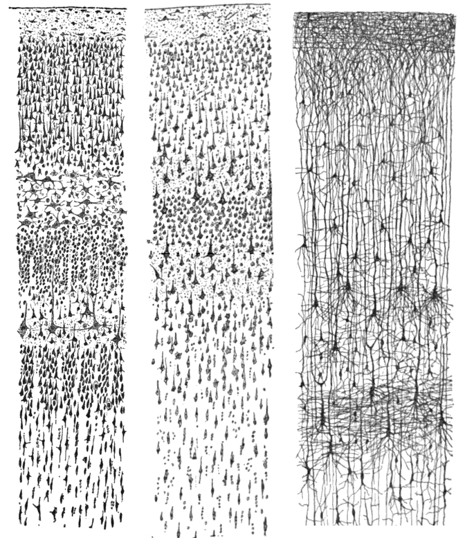
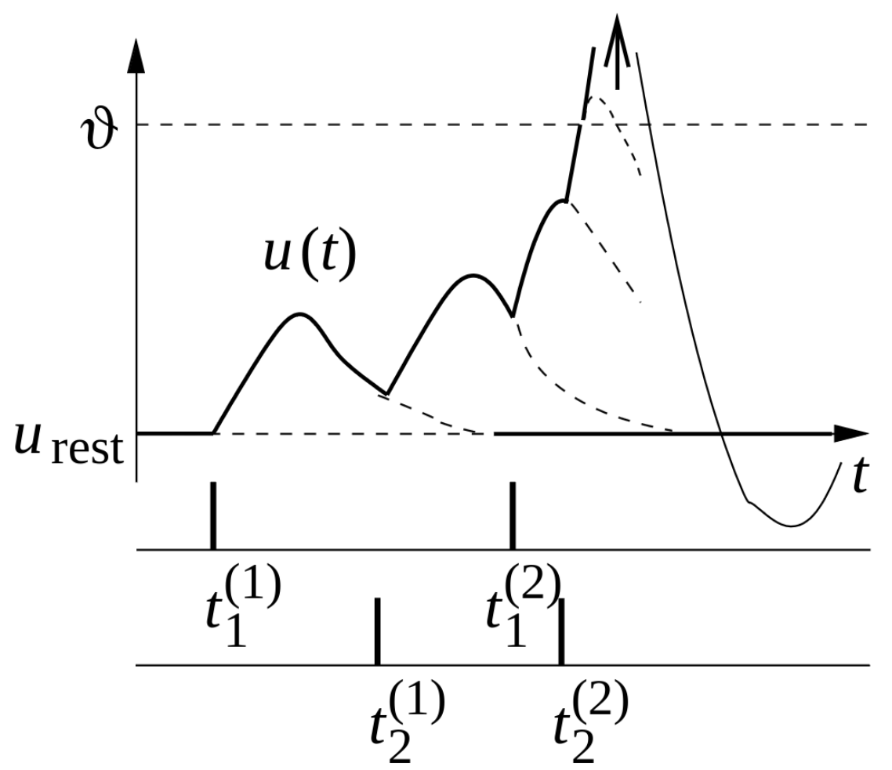
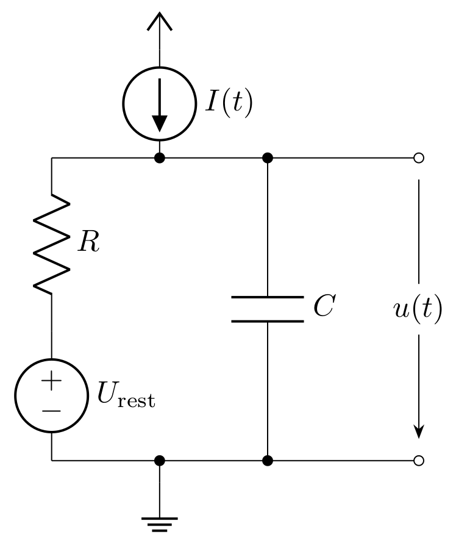

Biological background
{kind=link}
Computational neuroscience
The central neural system is highly complex and responsible for many functions in diverse life forms. From processing sensorial data, coordinating movement or having “thoughts”, all this is managed by this system. One building block of this system is the neuron. In this work we will only dip our toes in the deep water of neuromorphic engineering, limiting ourselves to a few models of neurons and synapses, learning behaviors of simple models and even dive a little deeper in the end.
We start with a model of an ideal spiking neuron (Gerstner (2014)); the name will become obvious after the introduction of its basic behaviors.
Neurons in biology
A neuron can be separated into three major parts which serve different purposes: The central unit of the cell is called soma, that receives ‘input’ from the dendritic tree, basically branched out wires extending around the soma. The ‘input’ arrives at synapses in the form of (chemical) neurotransmitters that are released following activity of a presynaptic neuron. The activity arrives in the form of so-called action potentials or spikes, (electrical) signals that are emitted at a soma and travel through the third part of a neuron, the axon. The neurotransmitters lead to voltage differences at the dendrites, again an electrical signal, which in turn affect the soma that can send out spikes via its axon when a sufficient amount of input has accumulated.
Let’s take a closer look at the physical behavior of a cell, especially the membrane potential of the soma. In the absence of any stimulation, we observe a negative resting voltage of approximately \(-65\) mV, a strongly negative polarized state. A stimulation happening through the dendrites changes the membrane potential. This can be formalized as follows: At a given time \(t\) the membrane potential of neuron \(i\) is \(u_i(t)\). When the neuron is not stimulated, for all times smaller \(0\), the potential is \(u_i(t<0) = u_\text{rest}\). At \(t=0\) a stimulation occurs in form of a spike which is triggered by a presynaptic cell. We define
as the postsynaptic potential (PSP). To indicate the direction of change we define further
Typically, the potential of the membrane does not stay at the same level, it decays towards the resting potential \(u_\text{rest}\).
Now let’s assume there are 2 presynaptic neurons \(j=1,2\). These neurons emit signals at respective times \(t_j^{(m)}\) where \(m\) states the \(m\)-th signal peak coming from that neuron. At each incoming signal peak, charges are deposited at the membrane and the potential rises. When many excitatory inputs have arrived at the neuron, the membrane potential can reach a critical value, triggering the neuron to fire. A sharp rise of the membrane potential (reaching a voltage of about \(+100 mV\)) is observed and the potential propagates down the axon. The neuron is said to have ‘spiked’ and the pulse is referred to as a spike.
After such a pulse, the membrane potential drops below the resting voltage and later it returns back. This is called hyperpolarization or spike-afterpotential. In that time the neuron can’t be stimulated. The trajectory of such an event can be observed in following image.
{kind=link}
On the x axis is the time while on the y axis is the membrane potential. At given times \(t_i^{(n)}\) the \(n\text{th}\) spike from neuron \(i\) arrives at our observed neuron. Each spike leads to a rise of the membrane potential \(u\). The dotted line indicates the assumed path if there wouldn’t be a change in current. In this instance \(t_2^{(2)}\) is enough to cross \(\vartheta\) (threshold) and the neuron by itself fires. In the case where the threshold is not reached, i.e., when only a few, weak spikes appear, the voltage behaves as the sum of the individual PSPs:
This is also called PSP-Staking (Image was taken from Gerstner et al. 2014, Chapter 1.2)
In the next step we want to find a way to make the model, i.e., the equations, more concrete, so it is easy to implement it on a neuromorphic substrate.
Modelling neuronal behaviour
Leaky integrate-and-fire (LIF) model
The neuron is driven by biochemical and bioelectrical principles, involving various interactions (for a short overview see Purves (2009)). We aim to find a suitable model that describes the basic behavior of neurons without necessarily incorporating all biological aspects. The goal is to obtain a somewhat similar behavior as described in the previous section. The following constraints are applied: The spikes always have to have the same shape, i.e., the shape does not contain any information. Instead, all information will be coded in the timings of the spikes. Further, membrane potential processes the information. Another feature, that needs to be modelled is when \(u_i(t)\) reaches a critical voltage threshold \(\vartheta\), a spike has to be initialized, causing this neuron “to fire” at this time \(t_i^{(m)}\). Such a model was proposed by Lapique (1907) and is called leaky fire-and-integrate (LIF).
Essentially, a cell membrane acts as a good insulator. When a current \(I(t)\) arrives at the membrane, additional charge is deposited. This behavior is similar to a capacitor and therefore we abstract a cell membrane by it with a certain capacitance \(C\). As previously discussed, the membrane potential decreases over time; therefore, the charge leaks. This can be emulated with a resistance \(R\). In addition we require a source to define a resting potential. This completes the basic circuitry for a neuron model:
{kind=link}
If we analyze the electrical circuit, we can find a differential equation describing the behavior of the capacitor voltage:
Here, \(\tau_m = R \cdot C\) is also called the membrane time constant, and the index \(i\) refers to the i-th neuron. \(I(t)\) in this equation represents a time dependent current flow onto (excitatory) or away from (inhibitory) the membrane. In neuroscience this equation, which describes a leaky integrator, is the equation of a passive neuron. Currently, it fulfills the requirement of integrating incoming spikes (see equation (1)), but it lacks an active part in the form of a spiking mechanism. For the basic model, we define a threshold value \(\vartheta\). When this value is crossed from below, an additional circuit emits a voltage spike that propagates to all connected neurons. At the same time, the potential of the capacitance is clamped to a defined value \(u_\text{reset}\) and kept at this level for the refractory period \(\tau_\text{r}\).
Adaptive exponential (AdEx) model
The LIF-model captures only some basic dynamics of a real neuron. Various models aim to enhance this understanding. In Brette (2005) an improved LIF-model is presented. The main additions are an exponential and an adaptation term. This is required to process high frequent synaptic input and model the spike initiation accurately. Further, a recovery variable is introduced to capture adaptation and resonance properties.
The equation above is arranged in such a way that the extension to the LIF-equation (2) is easily visible. As new terms are introduced: \(I_\text{ad}\) which is the adaptation current, \(\Delta_\text{T}\) is the threshold slope factor, \(u_\text{T}\) is the effective threshold potential. Further, a second equation is introduced to describe the dynamics of the adaptation. For this, a conductance \(a\) and the time constant for the adaptation current \(\tau_w\) is required. Another modification is the reset condition. While previously only the neuron was set to a reset potential, now the adaptation has to be modified as well. The action is now
Here, an additional variable is used, the spike triggered adaptation \(b\).
This model is called AdEx due to the exponential term. Depending on the parametrisation, it can describe different neuron types and model more sophisticated behaviors.